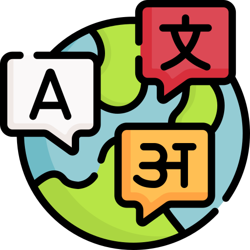

beforesaving one link
- Copy the address
- Open Dropbox or an editor
- Open Inbox.org
- Scroll to the end
- Paste the link, type a note
- Save
- Find the article again
Seven steps on a tablet, so most things were not saved at all — and what was, landed in one 4,000-line file.
nowone share, to one endpoint POST /capture · ⌘⇧K in Chrome
Wait until you see this village after darkinstagram.com/reel/…
SHARE TO TELEGRAM
job

langclip
the bot stays silent unless a capture fails
ROUTE
info▾
TEXT CONTENT
https://arxiv.org/abs/2609.14858v1
Selection: “A lightweight orchestration layer…”
INTENT
Compare with AlphaEvolve
✓ Captured info/2026-10-02_99
$ info-triage-capture --file spec.pdf "the spec"
info/2026-10-02_100
$ curl -H "Authorization: Bearer $TOKEN" \
-d '{"text":"…"}' http://server:8000/capture
Routes are yours config.yaml
routes:
- name: info # the default
token_env: TELEGRAM_…_INFO
steps: # all six
- name: voice-transcription
- name: text-cleaning
- …
- name: index-render
- name: job
steps:
- name: link-discovery
- name: index-render
A route is a pipeline, a queue and usually a bot. The template’s routes are examples: name your own, list their steps.
A link and the comment typed after it within 3 s become one item.
Edit the Telegram message and the item updates; add #job and it moves.